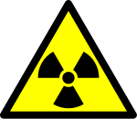

Radiación

En estos días han circulado muchas noticias respecto al accidente nuclear en Japón donde se habla de ciertas medidas de radiación. Por ejemplo, en un momento se midió un peak por sobre los 8.227 micro-sieverts en la central y el límite son 500 micro-sieverts.
Pero, ¿qué significa eso? Las noticias nos hablan de que se se emitieron dosis miles o millones de veces más altas que lo permitido, sin explicar cuáles son esos límites y que significan para la salud.Y a pesar de que la explicación está al alcance de todos, parece que hay pereza de los medios en investigar y explicar, o quizás no hay interés de poner las cosas en perspectiva (conspiranoicamente pensando, quizás es un buen negocio para alguien mantener la alarma pública).
Un Sievert (Sv) mide el grado de dosis de radiación absorbida por los tejidos. Se obtienen midendo la energía absorbida por kilogramo de peso (expresada en Grays) y multiplicándola por un factor que depende de la fuente de radiación.
Para tener una referencia: una radiografía al pecho te expone a 0.04
mSv, una mamografía son 0.3 mSv, una tomografía computarizada del pecho
va entre 6 a 18 mSv. La radiación natural del cuerpo humano es de 0.4
mSv/año.
Si interpreto bien, una dosis de 8.227 µSv/hora, o 8,23 mSv, eso es
equivalente a 197,45 mSv en 24 horas, ahora, porque lo expreso en 24
horas, es para comparar con la tabla que viene más abajo. la dosis
de 8.227 µSv/hora significaría que si se está expuesto al reactor de
Fukushima durante una hora se recibe el equivalente a una tomografía
computarizada de pecho.
Una persona recién empieza a verse afectada por sobre los 0,25 Sv (250
mSv, ó 25,0000 µSv), es decir, la dosis más alta medida ahora en
Fukushima es un tercio 4/5 aprox. de la dosis que empieza a generar
nauseas.
Por cierto, los japoneneses son previsores y establecieron el límite legal de radiación de sus plantas en los 500 µSv/hora, es decir, 1/50 ava parte de la radiación que empieza a generar nauseas.
Según wikipedia el daño se expresa en esta tabla (en una exposición de un día)
-
0–0.25 Sv: Nada
-
0.25–1 Sv: Algunas personas sienten nauseas, perdidad de apetito, daño a la médula osea, nodos linfáticos y al bazo.
-
1–3 Sv: Nausea más severa, pérdida de apetito, infección, daño más severo a medula osea, nodos linfáticos. Es probable recuperarse, aunque no se asegura.
-
3–6 Sv: Nausea severa, pérdida de apetito, hemorragias, infecciones, diarrea, escamas en la piel, esterilidad, muerte si no se trata.
-
6–10 Sv: Todos los síntomas anteriores, más deterioro del sistema nervioso central, expectativas de muerte.
-
Sobre 10 Sv: Incapacitación y muerte.
La radiación de 8.227 µSv/hora en Fuskushima aún está por debajo del umbral menor de esta tabla.
Actualización: tal como apunta Javier Rovegno, los efectos de la radiación son “acumulativos” (si dañas un organo por exposicion prolongada o intensa no te recuperas). La situación es grave, es por eso que se evacua a la gente mientras se realiza la contención de las fugas. Después hay que asegurarse que no queden desechos y fuentes de radiación en el ambiente, lo que es bastante difícil.
Se sabe que se han escapado radioisótopos a la atmósfera, algunos permanecerán por décadas, lo que sería interesante saber cuanto y de que tipo. Lo importante ahora es contener las fuentes de radiación, que es lo que están haciendo los ingenieros japoneses. Esperemos que lo logren y no empeore la situación.
Segunda Actualización: lamentablemente en estos momentos hay una discrepancia entre la autoridad japonesa y la internacional sobre el grado de la catástrofe, entre 4 y 6 en la escala INES. Esto introduce otro grado de incertidumbre en la información y de la consiguiente alarma.
Tercera Actualización: corregí algunos errores de cálculo.